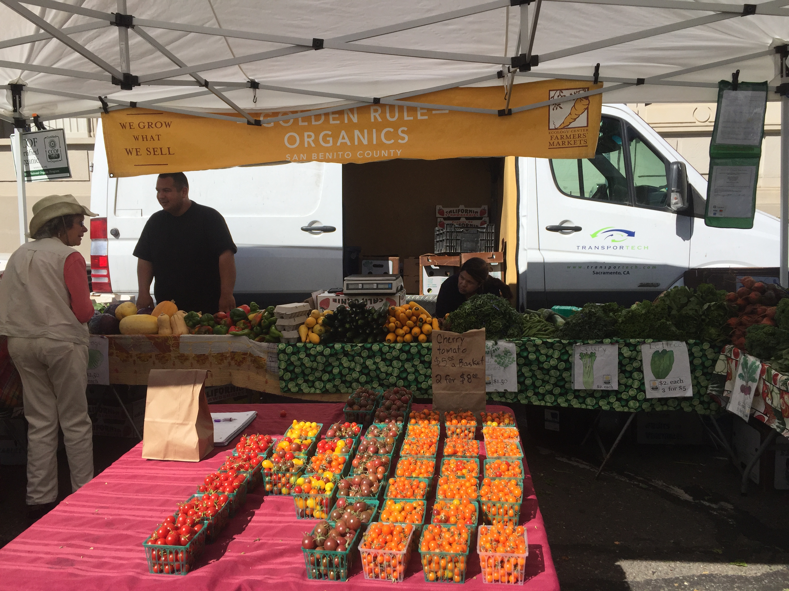

Downtown Berkeley Farmers Market
The Food and Vendors
If there is one way to describe how the foods at this farmers market (and all farmers markets in general) it would be “in piles”. This descriptor mostly applies to the produce in the market, which either inside boxes that are right side up, or piled onto the table inside boxes that are tipped over.
However, there exists much more than just simple produce, which is what I had in mind before first visiting this farmers market. Specifically in this market, I found a stand selling flowers, one selling his own olive oil, and many selling baked pastries.
I had a pleasant time speaking with Paigelynn, a cattle farmer for True Grass Farms. On the day I visited her she was selling different types of sausages as well as other cuts. When I interviewed her about what her experience as a vendor was like and what she enjoyed about it, she started with, well, it’s just a pleasant time. To her, it’s nice as a farmer to be able to interact with her customers one day a week, as she spends the six other days of the week with her animals, being her cows, lambs, and chickens. Selling the meat herself is superior than selling them to a grocery store, she says, because only she can answer specific questions about how the animals were raised, for example.
I also spoke to Eddie Diaz at the Berkeley Market. He is a produce farmer working for himself at Golden Rule Organics, who actually started off in a coop with three other farmers. This was necessary in order to have enough variety in fruits and vegetables to sell, he said. However, all of his coop-mates eventually dropped out but he still runs the entire operation himself and with great success. A big part of what he loves about working as a farmer and vendor is the problem solving that comes with competing against some of the larger farms present at the market. He was really into the idea of not having a boss. Just like Paigelynn, he expressed a love for his customers and interacting with them.
I ended up purchasing a box of cherry tomatoes from him, and I can confirm that they’re nice and juicy. :)